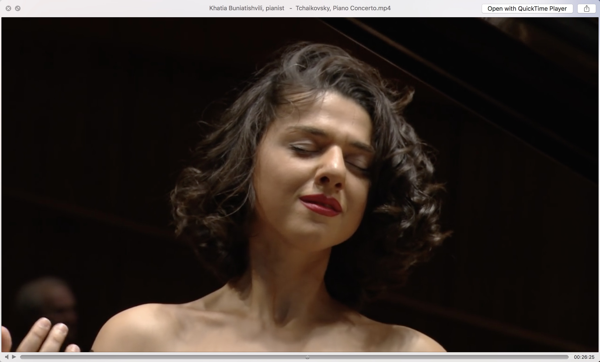
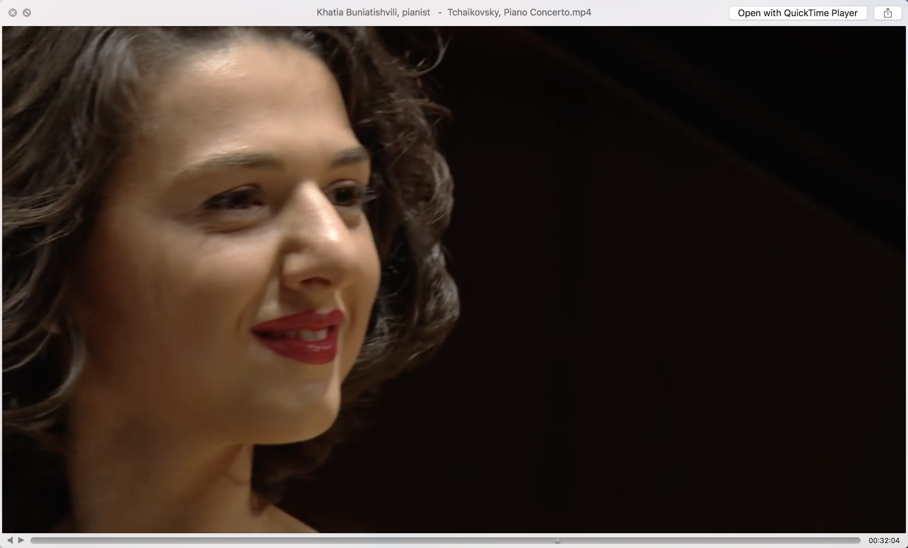

从下半年开始, 渐渐地, 我整日沉迷古典音乐, 去年看了几节耶鲁公开课的聆听音乐, 并没有坚持看, 但是偶尔会去听一些好听的古典音乐. 直到最近, 对古典音乐的热情爆发, 发现了一片超大的新大陆! 感觉这辈子都听不完! 好开心!
但是, 一个对新手很不友好的就是: 那么多外语… 于是, 这里整理一些常见单词和作曲家名字.然后再去听歌~
作曲家名
- 巴赫: Johann Sebastian Bach.
- 贝多芬: Ludwig van Beethoven
- 勃拉姆斯: Johannes Brahms 勃拉姆斯
- 肖邦: Frederic Chopin
- 德彪西: Claude Debussy
- 德沃夏克: Antonin Dvořák
- 格什温: George Gershwin
- 亨德尔: George Frideric Handel
- 海顿: Franz Joseph Haydn
- 施特劳斯: Johann Strauss（小施特劳斯只需在后面加上罗马数字二就行）
- 门德尔松: Felix Mendelssohn
- 穆索尔斯基: Modest Mussorgsky
- 莫扎特: Wolfgang Amadeus Mozart
- 帕格尼尼: Nicolò Paganini
- 赫尔斯特: Gustav Holst
- 拉赫玛尼诺夫: Rachmaninov
- 李斯特: Franz Liszt
- 斯美塔那: Bedrich Smetana
- 瓦格纳: Richard Wagner
- 罗西尼: Gioachino Rossini
- 舒伯特: Franz Schubert
- 肖斯塔科维奇: Dmitri Shostakovich
- 西贝柳斯: Jean Sibelius
- 柴可夫斯基: Peter llyich Tchaikovsky
- 维瓦尔第: Antonio Vivaldi
- 韦伯: Carl Maria von Weber
乐曲名
- Concerto 协奏曲
- Concerto Grosso 大协奏曲
- Solo Concerto 独奏协奏曲
- Sonata 奏鸣曲
- Symphony 交响曲
- Symphonic Poem 交响诗
- Symphonic Suite交响组曲
- Fugue 赋格曲
- Prelude 前奏曲
- Invention 创意曲
- etude 练习曲
- Suite 组曲
- Toccata 托卡塔
- Serenata 小夜曲
- String Quartet 弦乐四重奏
- Ballade 叙事曲
- Orchestra 管弦乐
- Chamber Music室内乐
- Humoresque 幽默曲,诙谐曲
- Canon 卡农
- Capriccio 随想曲
- Rhapsody 狂想曲
- March 进行曲
- Partita 帕蒂塔(古组曲)
- Contata 康塔塔
- Oratorio 神剧
- Chorale 众赞歌
- Missa 弥撒
- Kyrie 垂怜经
- Gloria 荣耀经
- Credo 信经
- Chant 圣咏
- Gregorian Chant 格里高利圣咏
- Motet经文歌
- Madrigal 牧歌
- Opera 歌剧
- Overture 序曲
- Sinfonia 早期歌剧的序曲
- Introduction 序幕
- Aria 咏叹调
- Recitative 宣叙调
- Passion 受难月
- Choral 合唱
- Cradle Song摇篮曲
- Waltz 华尔兹
- Polonaise 波兰舞曲
- Minuet 小步舞曲
- Ballet 芭蕾舞曲
- Polka 波尔卡
- Alto 女低音
- Soprano 女高音
- Baritone 男中音
- Tenor 男高音
- duet 二重奏
- trio 三重奏
- quartet 四重奏
速度
- Grave 壮板
- Adagio 柔板
- Lento 慢板
- Largo 广版
- Andante 行版
- Andantino 小行板
- Moderato 中板
- Allegretto 小快板
- Allegro 快板
- Vivo 快速而有生气
- Vivace 快速而有生气
- Presto 急板
- molto 很
- assai 非常
- meno 稍少一些
- possible 尽可能的
- poco 一点点
- piu更多一些
- non troppo 但不过甚
- sempre 始终 永远
调性
- Major/dur 大调
- Minor/moll 小调
- flat 降调
- sharp 生调
乐器
- Violin 小提琴
- Cello 大提琴
- Piano 钢琴
- Oboe 双簧管
- Clarinet 黑管
- Flute 长笛
- Trumpet 小号
- Horn 圆号
- Accordion 手风琴
- Bassoon 大管(巴松)
- Contrabass 低音提琴
- Harmonica 口琴
- Harp 竖琴
- Organ 管风琴
- Recorder 竖笛
- Trembone 长号
- Tuba 大号
- Viola 中提琴
- Xylophone 木琴
风格
- Baroque 巴洛克式
- Rococo 洛可可式
- classicism 古典主义
- neoclassicism 新古典主义
- remonticism 浪漫主义
- realism 现实主义
- impressionism 印象主义
- expressionism 表现主义
- naturalism 自然主义
- futurism 未来主义
演奏家
这个我还不认识几个, 不过我感觉古典音乐被演奏的时候才是最有活性的时候,最美的时候! 有钱一定要去听现场! 而且不同的演奏家风格不同, 好有意思!
最近认识一个Khatia. 真的是太美了!


还有,没错, 说的就是你. 别看胸.听琴!